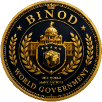
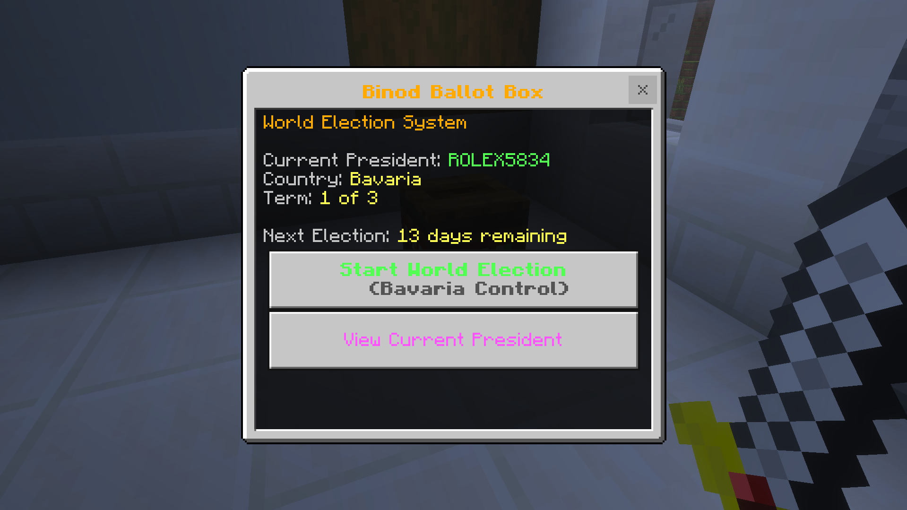
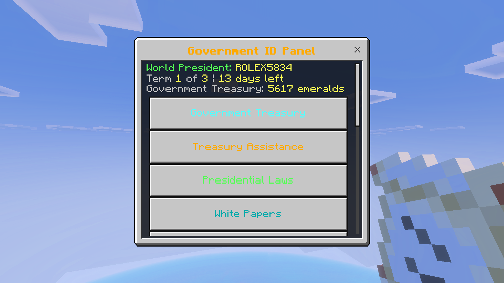

Official Government Portal · Est. 2014
One World • Many Nations • Shared Prosperity
The Binod World Government serves as the central administrative authority responsible for constitutional governance, national development, intergovernmental cooperation and economic stability across the Member Nations.
Established in 2014, the Government has expanded through democratic elections, constitutional reforms, treasury administration and diplomatic cooperation among all six sovereign member states.
The World President — elected through direct democratic vote — leads the Government and exercises executive powers including legislation, fiscal authority and international relations.
About the Government →From the founding of the first nation to the present administration — the journey of the Binod World Government.
Full History →Six sovereign nations united under the Binod World Government — each with distinct responsibilities, governance structures and national identities.

